Hardware Grade 10
Hardware is every physical component of a computer — the parts you can actually touch. Software is the instructions that tell hardware what to do. Together they make a complete computing system.
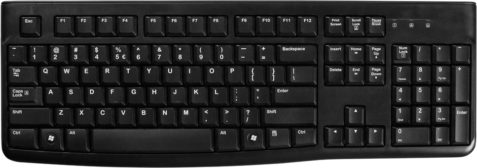
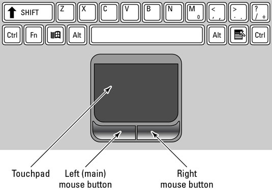
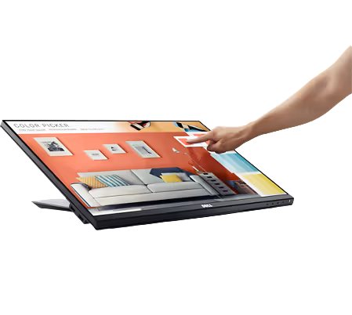
Hardware vs Software — The Body Analogy
Think of your body: your brain, eyes, hands, heart are hardware — physical organs you can touch. The thoughts, decisions, and reflexes your brain generates are software — instructions that control what your body does. A computer works the same way: the physical parts are hardware, and the programs running on them are software.
The Computer System — Five Categories
Every hardware component falls into one of five categories. Data flows through the system in a loop: Input → Processing → Output, while Memory holds data temporarily and Storage saves it permanently. Communication devices connect the computer to other devices.
Hardware Categories
| Category | Description | Examples | You use this when… |
|---|---|---|---|
| Input devices | Allow you to add data to the computer | Keyboard, mouse, touchscreen, scanner, microphone, webcam | You type, click, scan a document, or record a video |
| Output devices | Present results to the user | Monitor, printer, speakers, projector | You read text on screen, print a document, hear sound |
| Processing devices | Execute instructions and perform calculations | CPU, GPU | Any program runs — it's always using the CPU |
| Memory (RAM) | Temporary storage for data being processed | RAM, cache | You open a program — it loads into RAM |
| Storage devices | Permanently save data for later use | HDD, SSD, USB flash drive, memory card, optical disc | You save a file — it goes to storage |
| Communication devices | Allow computers to connect to networks | NIC, modem, router, Wi-Fi card | You browse the internet or share a printer |
Input Devices in Detail
Keyboard
- Used to type letters, numbers, symbols, and commands
- Types: mechanical (tactile click), membrane (quiet, cheap), wireless, ergonomic
- Special keys: F1–F12 (function keys), Ctrl, Alt, Shift (modifier keys), shortcuts like Ctrl+C (copy)
- You use this when: typing a document, entering a password, coding in Delphi
Mouse
- Pointing device for graphical interfaces (GUI)
- Types: optical (uses LED light), laser (more precise), trackball, wireless
- Actions: left-click (select), double-click (open), right-click (context menu), drag-and-drop, scroll wheel
- You use this when: navigating a desktop, clicking buttons, drawing in a graphics program
Other Input Devices
| Device | How it works | Common use |
|---|---|---|
| Touchscreen | Detects finger or stylus pressure on screen | Smartphones, tablets, POS tills at Pick n Pay |
| Scanner (flatbed) | Passes light over document, captures image | Scanning ID documents, photos |
| Barcode scanner | Reads black/white stripes with laser | Supermarket checkouts, library books |
| Webcam / camera | Captures video/still images | Google Meet, Teams calls, security cameras |
| Microphone | Converts sound waves into digital data | Voice commands, online calls, recordings |
| Stylus/graphics tablet | Pressure-sensitive pen on surface | Digital art, architect sketches |
Output Devices
Monitors
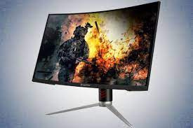
LCD/LED Monitor
| Specification | Meaning | Example |
|---|---|---|
| Resolution | Number of pixels (dots) on screen. More = sharper image | 1920×1080 (Full HD), 3840×2160 (4K) |
| Refresh rate (Hz) | How many times the screen redraws per second | 60 Hz standard; 144 Hz for gaming |
| Screen size (inches) | Measured diagonally corner to corner | 24" desktop, 15.6" laptop |
| LCD | Liquid Crystal Display — uses fluorescent backlight | Older monitors and TVs |
| LED | Improved LCD with LED backlight — brighter, thinner, more energy efficient | Most modern monitors |
| OLED | Each pixel emits its own light — perfect blacks, best contrast | Premium phones, TVs |
Printers
| Type | How it works | Use case | Cost per page |
|---|---|---|---|
| Inkjet | Sprays microscopic ink droplets onto paper | Home or office colour printing, photos | Medium |
| Laser | Electrostatic drum attracts toner powder, fuses it with heat | Fast high-volume office printing | Low (bulk) |
| Ink-tank | Bulk refillable ink reservoir — no cartridges | Schools, high-volume printing (e.g. Epson EcoTank) | Very low |
| 3D Printer | Layers material (plastic, resin) from a digital design | Prototypes, models, custom parts | Varies |
DPI (dots per inch) = print quality (higher = sharper).
PPM (pages per minute) = print speed.
Storage Devices
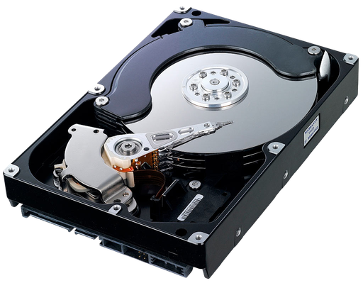
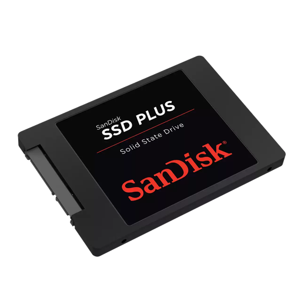
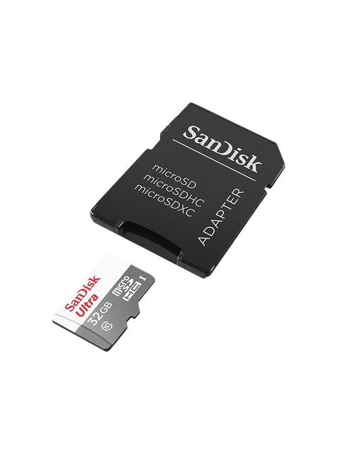
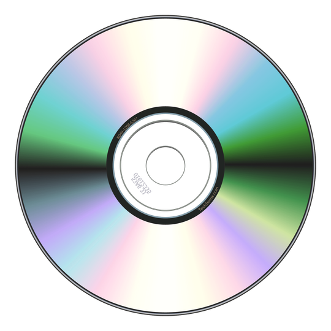
| Device | Technology | Speed | Notes |
|---|---|---|---|
| HDD | Magnetic spinning platters — a read/write head moves over them like a vinyl record | Slow (~120 MB/s) | Cheap per GB, large capacities (1–20 TB), fragile (moving parts) |
| SSD | Flash memory chips — no moving parts, like a giant USB drive | Very fast (~500 MB/s+) | Durable, silent, faster boot times, more expensive per GB |
| NVMe SSD | SSD connected directly to CPU via PCIe slot | Extremely fast (~3500 MB/s) | Found in high-end laptops and desktops |
| USB flash drive | Flash memory in a portable stick | Moderate | Easy to carry, easy to lose; 8 GB–512 GB common |
| Memory card | Flash (SD, microSD) | Moderate–fast | Used in cameras, phones, drones |
| Optical disc | Laser reads/writes pits and lands on a spinning disc | Slow | CD (700 MB), DVD (4.7 GB), Blu-ray (25 GB) — mostly obsolete |
HDD vs SSD — Detailed Comparison
| Feature | HDD | SSD |
|---|---|---|
| Speed | Slow (~80–160 MB/s read) | Fast (~400–3500 MB/s read) |
| Durability | Fragile — moving parts can break if dropped | Durable — no moving parts |
| Cost | Cheap (R500 for 1 TB) | More expensive (R800–R1200 for 1 TB) |
| Noise | Audible clicking/spinning sound | Completely silent |
| Power use | Uses more power — reduces laptop battery life | Uses less power — better for laptops |
| Boot time | ~45–60 seconds | ~8–15 seconds |
| Best use case | Bulk storage, backups, external drives | Operating system drive, main laptop drive |
Types of Computers
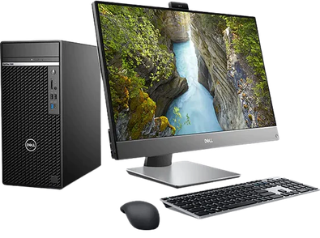
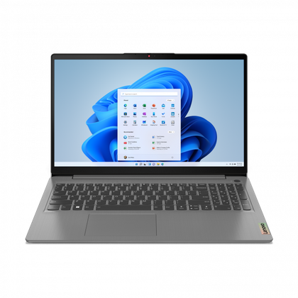
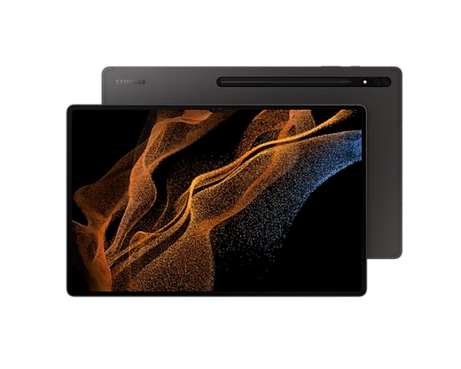
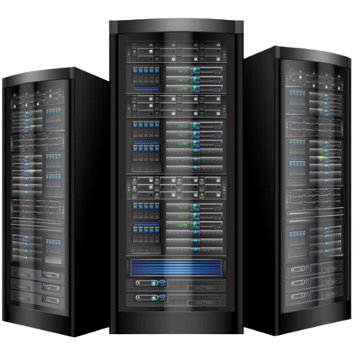
Memory vs Storage
RAM = your desk workspace — only holds what you're actively working on right now. It's fast to access but clears when you switch off.
Storage (HDD/SSD) = the filing cabinet — stores everything long-term, even when the power is off. Slower to access than RAM.
Memory Hierarchy — Speed vs Capacity
The higher up the pyramid, the faster and more expensive the memory — but there's less of it.
| CPU Cache | RAM | SSD | HDD | |
|---|---|---|---|---|
| Purpose | Holds the CPU's most-used data | Active programs and open files | Installed programs, OS | Bulk file storage |
| Volatile? | Yes — clears on power off | Yes — clears on power off | No — data stays | No — data stays |
| Speed | Extremely fast (nanoseconds) | Very fast | Fast | Slow |
| Typical size | 4–32 MB | 4–64 GB | 256 GB – 4 TB | 500 GB – 20 TB |
Processing — CPU & GPU
- CPU (Central Processing Unit) — the "brain" of the computer. Fetches instructions from memory, decodes them, and executes them. Measured by: clock speed (GHz — higher = faster), number of cores (more cores = more tasks at once), and cache size. Example: Intel Core i5, AMD Ryzen 5.
- GPU (Graphics Processing Unit) — specialist processor for parallel tasks like rendering graphics, gaming, and AI. Can be integrated (built into the CPU — uses less power) or dedicated (separate card with its own memory, like NVIDIA GeForce). Example: your phone camera uses a GPU to apply filters in real-time.
Storage Units
| Unit | Abbreviation | Size | Real-world example |
|---|---|---|---|
| Bit | b | Smallest unit — 0 or 1 | A single on/off switch |
| Byte | B | 8 bits | One character, e.g. the letter "A" |
| Kilobyte | KB | 1 024 bytes | ~One page of plain text |
| Megabyte | MB | 1 024 KB | A small photo, a 3-minute MP3 song |
| Gigabyte | GB | 1 024 MB | A 2-hour movie, a smartphone game |
| Terabyte | TB | 1 024 GB | A large hard drive, server storage |
| Petabyte | PB | 1 024 TB | Entire data centres, cloud storage |